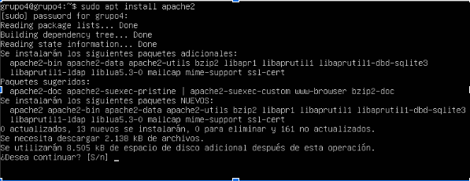
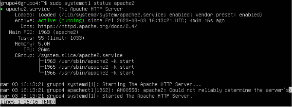

Un servidor web o servidor HTTP es un programa informático que procesa una aplicación del lado del servidor, realizando conexiones bidireccionales o unidireccionales y síncronas o asíncronas con el cliente y generando o cediendo una respuesta en cualquier lenguaje o aplicación del lado del cliente.
A continuación os explicaremos cómo hemos desarrollado este reto, en el cual, hemos utilizado la misma máquina virtual de Ubuntu Server. En este reto nos pedía hacer la instalación y configuración del servidor web. Primero de todo instalaremos el paquete apache2 a través de la terminal como la configuración en la cual tendremos que configurar que nuestro sitio web sea www.grup4.cat y después configurar del sitio habilitado un certificado SSL/TLS, eso quiere decir que podremos entrar al sitio web tanto por el puerto 80 como por el 443.
1. Instalación del servidor web
1.Para empezar la instalación del servidor web debíamos instalar Apache 2, para esto usamos el comando sudo apt install apache2.

2.Una vez instalado debemos validar su estado usando el comando sudo systemctl status apache2.
